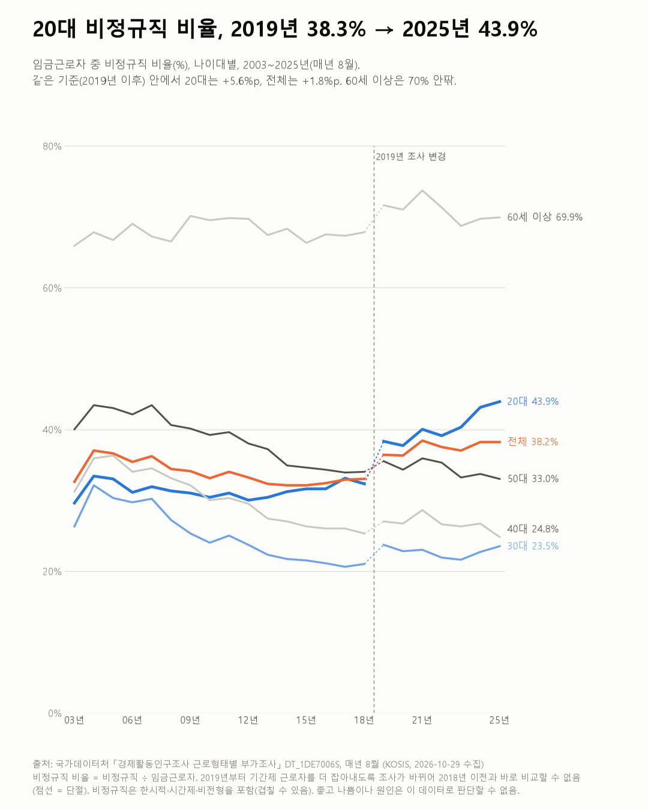
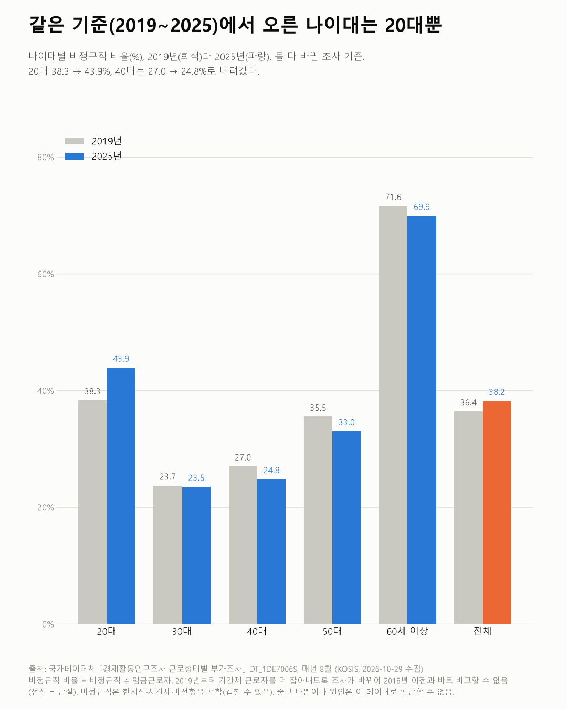

20대 비정규직 비율, 2019년 38.3% → 2025년 43.9%
근로형태별 부가조사 2003~2025

질문
임금근로자 중 비정규직 비율은 나이대별로 얼마나 다른가? 20대와 60세 이상은 어떻게 바뀌었나?
사용 데이터와 출처
| 데이터 | 출처 | 쓰임 |
|---|---|---|
| 성/연령별 근로형태(비정규직)별 취업자 (KOSIS DT_1DE7006S) | 국가데이터처 「경제활동인구조사 근로형태별 부가조사」 | 나이대별 임금근로자·정규직·비정규직, 매년 8월 2003~2025년 |
- 비정규직 비율 = 비정규직 ÷ 임금근로자. 비정규직은 한시적(기간제 포함)·시간제·비전형 근로자다(노사정위원회 2002년 합의 정의). 한 사람이 여러 유형에 해당할 수 있다.
- 2019년부터 조사가 바뀌었다. 기간제 근로자를 더 잡아내게 되면서 비정규직이 늘어난 것처럼 보인다. 그래서 2018년 이전과 2019년 이후를 따로 비교했다. 2018→2019 변화는 해석하지 않는다.
- 15~19세는 표본 오차가 커서 쓰지 않았다.
- 검증: 정규직 + 비정규직 = 임금근로자인지 모든 해·나이대에서 확인했다.
- 교차 확인: 2025년 8월 비정규직 856.8만 명, 비율 38.2%, 시간제 422.9만 명은 국가데이터처 발표 보도와 같다.
- 수집일: 2026-10-29 (KOSIS 오픈API).
인사이트
1. 같은 기준(2019~2025년) 안에서 20대 비정규직 비율은 38.3%에서 43.9%로 올랐다. 나이대 중 오른 것은 20대뿐이다. 30대(23.7 → 23.5%), 40대(27.0 → 24.8%), 50대(35.5 → 33.0%), 60세 이상(71.6 → 69.9%)은 조금씩 내려갔다.
2. 그런데 전체 비율은 36.4%에서 38.2%로 올랐다. 나이대마다 거의 내려갔는데 전체가 오른 것은, 비정규직 비율이 높은 60세 이상이 임금근로자에서 차지하는 비중이 13.2%에서 19.4%로 커졌기 때문으로 보인다(나이 구성 변화).
3. 60세 이상은 10명 중 7명이 비정규직이다. 2003~2018년에도 66~70%였고, 2019년 이후 69~74%다.
4. 20대는 일하는 사람 수가 줄면서 비정규직 수는 늘었다. 20대 임금근로자는 355.5만 명(2019) → 325.8만 명(2025)으로 줄었고, 비정규직은 136.2만 명 → 143.1만 명으로 늘었다.
5. 2003~2018년(옛 기준)에는 20대 비율이 30~33%에서 크게 변하지 않았다. 30대는 26.3%에서 21.0%로, 40대는 31.2%에서 25.3%로 내려갔다.

한계
이 데이터로 말할 수 없는 것
- 조사가 2019년에 바뀌었다. 2003년과 2025년을 바로 비교하면 안 된다.
- 비정규직이 모두 원하지 않는 일자리는 아니다. 시간제를 스스로 고른 경우도 있다. 이 표로는 자발 여부를 알 수 없다.
- 8월 한 달 기준이다. 계절에 따라 다를 수 있다.
- '나이 구성 변화로 보인다'는 해석이다. 정확히 나누려면 나이대별 가중 분해가 필요하다(이 글에서는 비중만 확인).
- 원인과 좋고 나쁨은 판단하지 않는다.
전제 기록
데이터를 보기 전에 적어둔 것, 그리고 보고 나서 바꾼 것
- 전제 기록(premises)(데이터를 받기 전에 작성)를 따랐다. 표 주석의 2019년 조사 변경을 받기 전에 확인해 두 구간으로 나눴다.
- 받은 뒤 추가한 것: 나이대는 내려가는데 전체가 오르는 것을 보고, 60세 이상 비중 변화를 확인해 인사이트 2로 넣었다.